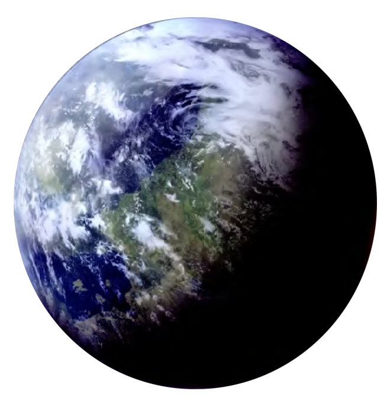

Cerea
cerea
Population: 450 Million


Terrain: Rural villages, Farmland, Rolling hills, Forests
Orbital Metrics: 386 days per year / 27 hours per day
Languages: Basic, Cerean
Major Cities: Tecave City
Areas of Interest: Outsider Citadels
Major Exports: Foodstuffs
Major Imports: Technology
Astronavigation Data
Trade Routes: Great Gran Run, Cerean Reach, Spar Trade Route
Cerea is a small, backwater agriworld and home to the cone-headed Cereans. Its endless hills and forests provide ample farmland for all Cereans, who prefer to maintain a simple, rustic existence. Cereans usually build their houses from local materials, and they run their farms without any industrialization. The fact that Cereans have two hearts is well known, and most say the first is for the family, but the second is for Cerea itself. For fear of pollution and industrialization of their verdant homeworld, Cereans have outlawed most technology. However, the policy does hot apply to the local Imperial garrison and those in Outsider Citadels, as long as they keep their tech on the premises.
The Outsider Citadels are large, top-heavy towers located a day’s ride outside Tecave City so as not to mar the horizon. Each citadel contains tens of thousands of traders, farmhands, negotiators, and merchants. While the citadels are very necessary for the export of foodstuffs, most Cereans are against their increasing presence; their numbers have been on the rise for decades. To most locals, Outsider Citadels are a source ofcrime, pollution, and contraband technology.
While Imperial Governor Andreo Tagge brings vast expertise in agriworld management, the Empire allows the Cerean Council of Elders to govern the planet. The council is an annual convocation of five hundred representatives from villages across the planet, led by a president. A small portion of the council remains in Tecave City year-round to address time-sensitive issues.
Tecave City is a white-columned wonder of squat spires and bronzed domes handcrafted without the aid of droids or industrial equipment. While most farmers and farmhands live on the land they work, a number of support industries are centralized. At Tecave’s markets, Cereans can purchase riding aryxes, plowing moots, oorg meat, or any variety of metalwork they might need. Most farmers sell their crops to intermediaries in Tecave, who put a portion on the local market and bring the rest to an Outsider Citadel to negotiate its sale to offworld markets.
Rising Tensions
Governor Tagge continues to annex and industrialize more of Cerea’s arable land each year in blatant violation of Cerea’s terms of surrender. A growing offworlder presence has increased the prevalence of small technological items among Cerea’s youth, including datapads, glow rods, and other trinkets. These have become points of tension between the Imperials and the Council of Elders, and have caused strife within many Cerean families. The council has filed a number of formal complaints and launched investigations, but to no effect, leading to growing discontent with Imperial rule.